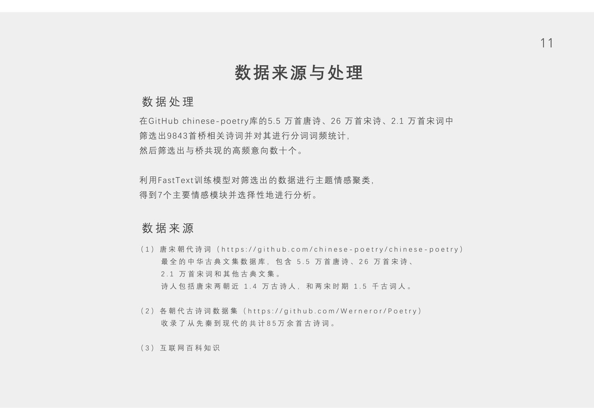
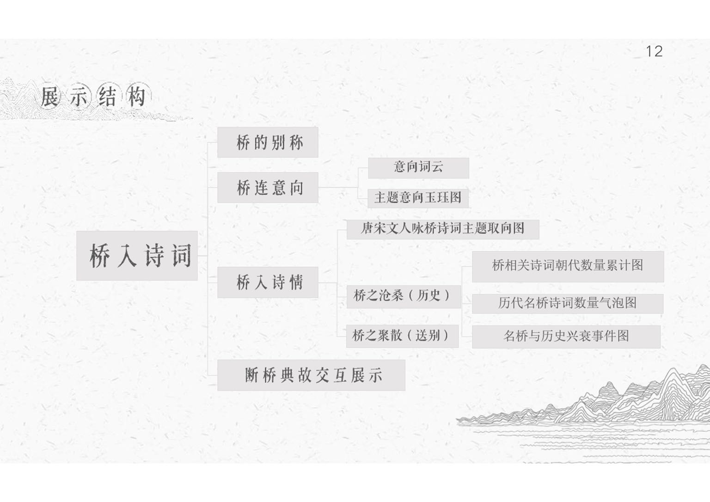
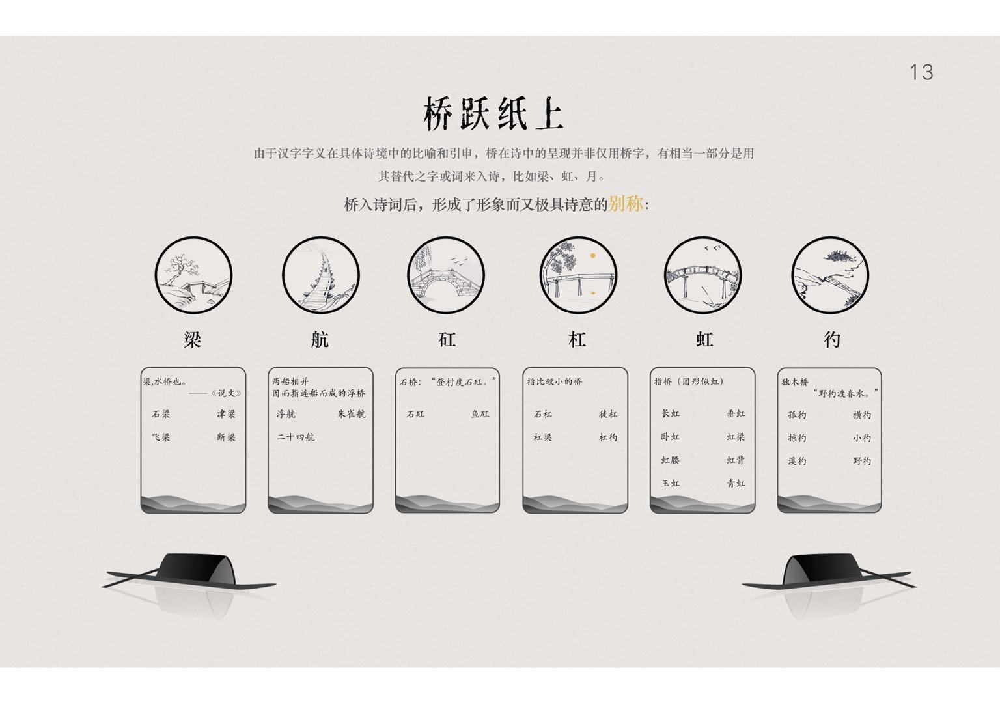
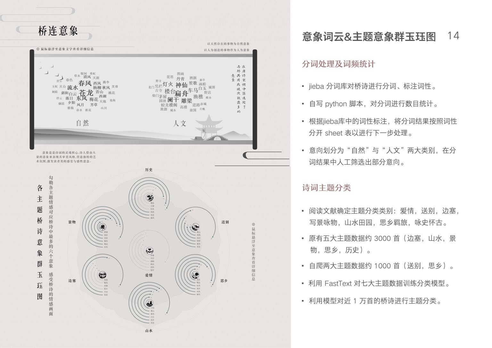
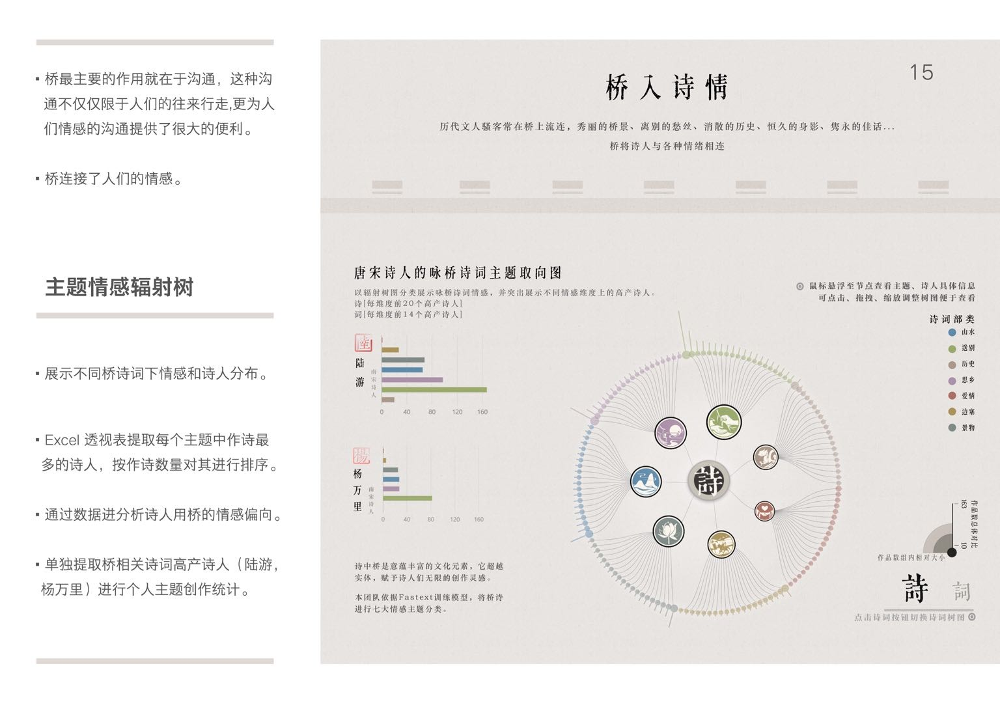
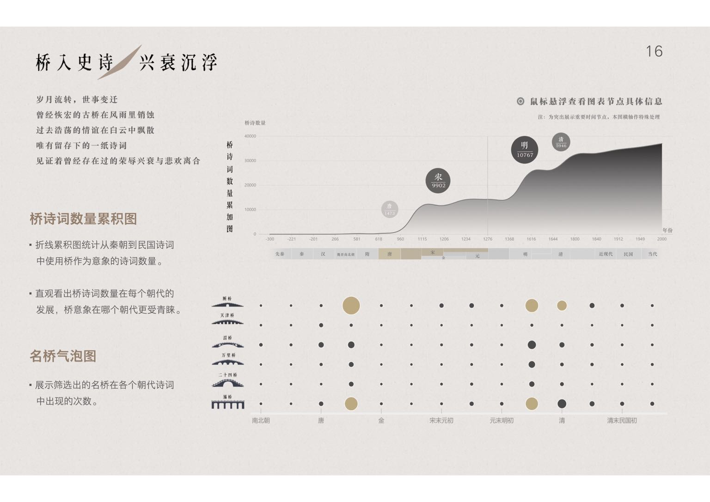
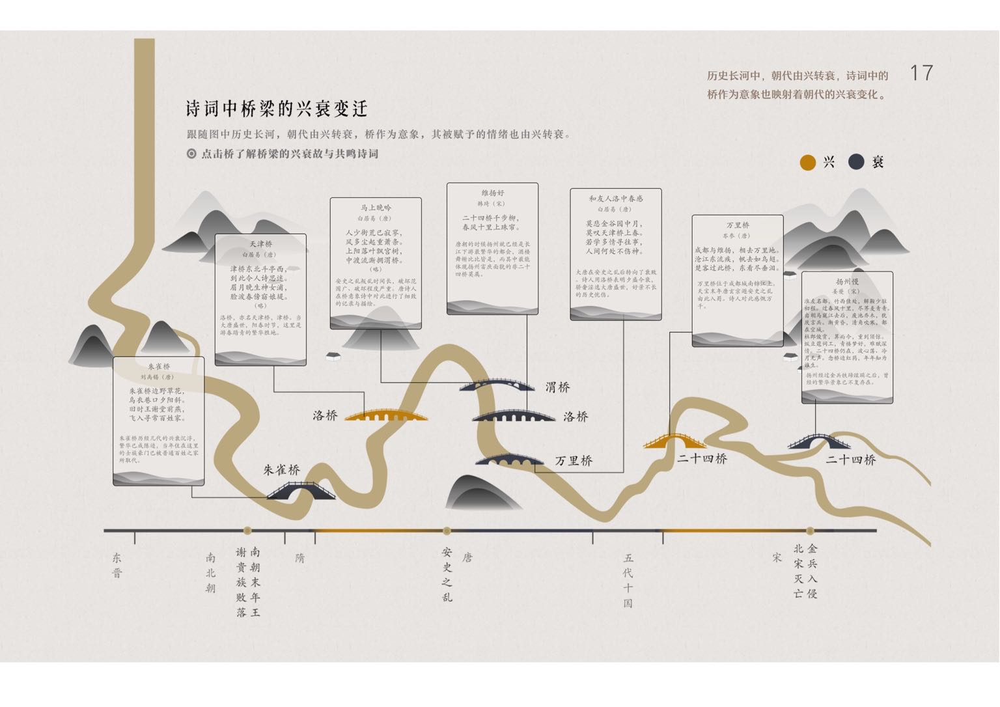
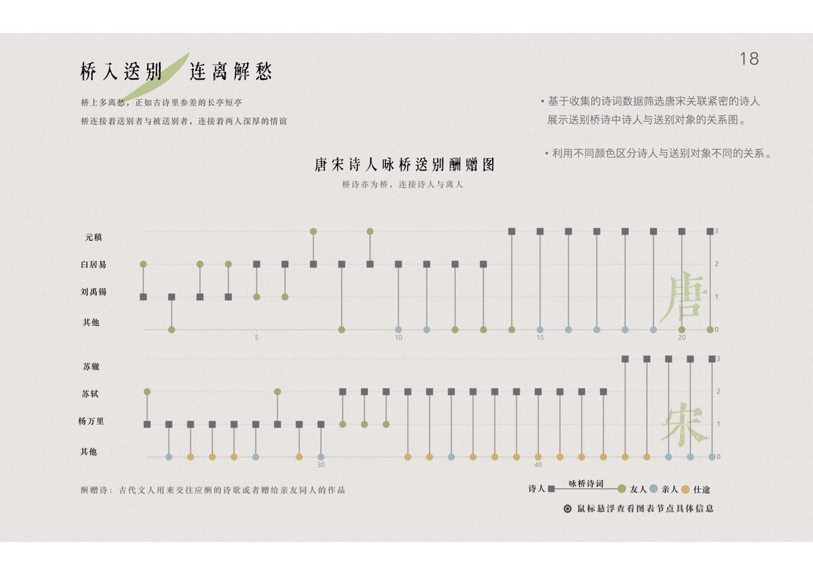

本科时期的数字展示大作业。
展示视频前排指路👉:
这是一个b站链接
以前的网页相关文件没怎么保存，很多内容缺失了，近期回家花了一点时间重新整理了一下以前的网页文件，因为时间有限，所以偷懒的地方也有一些。（整理过程中真的很想吐槽以前写的辣鸡代码QAQ）
整理的过程中看着很久前做的东西重新被复原还挺感慨的，就好像离开很久的爱人重新回来了一样。（bushi
回头看来这个页面展示的信息其实不算多，没能很好的把当时处理的很多数据都展现出来，手法比较稚嫩😶。然而不得不感慨的是，这次整理时，很多以前抓耳挠腮都解决不了的问题，现在我已经可以比较快的解决了，证明过去的这段时间我还是有点进步的，嘻嘻😎。
展示页面指路👉：
下面是之前简单概括整理的以前的文档内容，在这里留个档啦。







